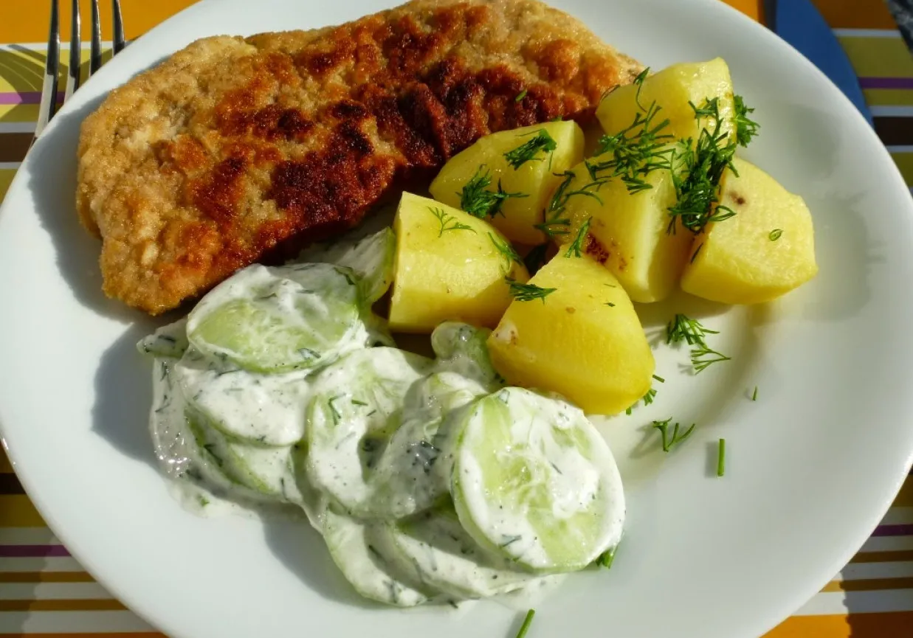
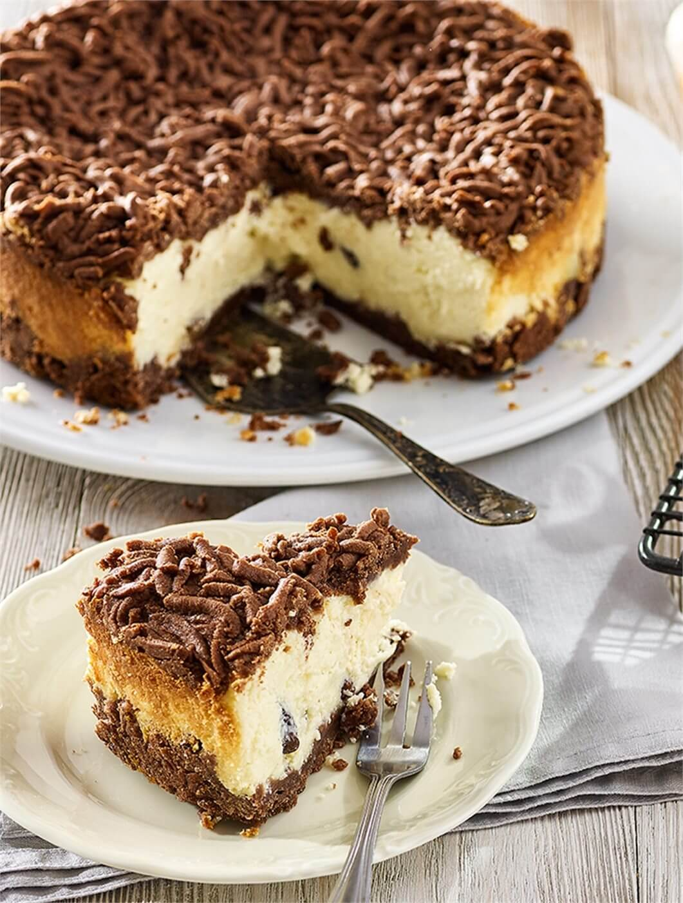

Foods
Jajka w majonezie

Usually are making during the easter. But also during the christmas and new year eve!
It's just served as an appetizer.
When I eat it with family I eat it with the "śledzie w oleju" - really delicious mixing.
I like to put chive in the end of making it :)
Ingredients:
- 6 pieces of hard-boiled eggs
- 300g mushrooms
- 1/2 onion
- 1 spoon of oil
- 1 spoon of butter
- 1/2 a bunch of parsley
- salt, black pepper
- Mayonnaise around 150ml
- Hard-boil eggs, pour cold water, crush shells and set aside to cool(if necessary change the water in to colder one).
- Remove the shells, cut lengthwise into two halves.
- Remove the yolk from eggs to bowl and smash it with fork.
- Wash mushrooms and dry thoroughly and cut into slices
- Chop the onion finely
- On the pan in oil glaze the onion then add butter and mushrooms and fry while mixing until turns gold meanwhile put some salt and black pepper.
- Take off mushrooms and onion from the pan and put aside on cool then cut finely or grind in the machine with the parsley.
- In the end combine with egg yolk, put salt and black pepper and mix it with 2~3 spoons of mayonnaise.
- Fill the egg white with stuffing and press.
- Place with the cutting side down on the dish, put mayonnaise and decorate with the parsley.
- Smacznego!
recipe taken from www.kwestiasmaku.com
picture taken from the www.kwestiasmaku.com
Żurek

Żurek is really Polish traditional soup!
The most unique taste, and serve method!
Traditionally we serve soup inside the bread! Like you can see on the picture :)
Ingredients:
8.5 cups (2 litres, 0.5 gallon) meat stock (chicken, mixed-meat, rosół works great too)
7 oz (200g) unsliced bacon
1 (200g, 7 oz) medium white onion
2 medium carrots (roughly 4.2 oz, 120g)
2 parsley roots (roughly 4.2 oz, 120g) - can be substituted for a celery root)
4 links (500g, 1.1 lb) white kiełbasa sausage (fresh, uncooked)
2 ¼ cups (500ml) Sour Rye Flour Starter (link to a recipe in the notes)
1 garlic clove
3 tbsp whipping cream (optional, 30-36% fat)
1 tbsp dried marjoram
Salt to taste
Pepper (freshly ground) to taste
IF USING A HOMEMADE 'ZAKWAS' FERMENTED WITHOUT SPICES:
4 bay leaves
5 all-spice berries
5 black peppercorns
TO SERVE:
4 boiled eggs, halved
Fresh marjoram to garnish
INSTRUCTIONS:
- Get a cooking pot. Pour in the stock and start heating it up (on a medium heat).
- Chop bacon and onion into small cubes. Using a frying pan, fry up the bacon first. There is need to add any additional frying fat, bacon will release plenty of its own.
- Once the bacon fat has rendered, add the onion pieces and continue frying until both ingredients turn golden.
- Move the contents of the frying pan into the pot with cooking stock. If your ‘zakwas’ starter was fermented without spices (that is: bay leaves, all-spice berries and peppercorns), it’s a good moment to add them directly into the soup. I place them inside a mesh spice bag/stock sachet, so that I don't have to struggle fishing them out later.
- Peel carrots and parsley roots, drop them whole into the stock.
- Add white kiełbasa (uncut, whole links) as well and continue cooking for 30-40 minutes, until the stock becomes meaty in aroma and flavour (you’ll have to test that empirically).
- If you haven’t boiled the eggs already, now is a good moment to do so. Once cooked, allow them to cool down.
- The next step would be to remove the spices. If you used the spice bag, just take it out. Otherwise, you can fish them out manually with a spoon, or get rid of them using a sieve - and return the soup into the pot.
- Now it’s time to add rye 'zakwas' starter. Add 1⅓ cup (300ml) of zakwas for a mild Żurek, up to 2 cups (or more; roughly 500ml) for a more sour result. If you’re not sure how much you should add, just pour it over gradually, tasting along the way.
- There are two ways to do it:
• Mix the contents of the jar/bottle, so that the liquid part blends with the floury part, • Or start by adding the liquid only, topping with the muddy floury part later on - spoonful by spoonful, until you reach the desired thickness. That’s how I do it. - Add 1 tablespoon of dried marjoram and one garlic clove (crushed or roughly chopped), cook for another 4-5 minutes.
- Remove the pot from heat. Remove the sausage and vegetables with a slotted spoon, slice them all and return to the pot. You can also leave the sausage unsliced - that’s up to you.
- Adding cream is optional, but it balances the flavours very nicely. Place 3 tablespoons of whipping cream into a cup or a small bowl. Add in a tablespoon of Żurek, mix well with a fork. And another spoonful of soup and mix again. Repeat with 2 more tablespoons of Żurek. Pour the mixture into the pot.
- Have a taste. Does it need any more salt or a pinch of pepper? If so, add some to taste. Garnish with fresh marjoram or chopped parsley and serve with boiled egg halves.
- Smacznego!
recipe taken from kissmeimpolish
picture taken from the Winiary.pl
Schabowy z ziemniakami
This dish is really important for each Polish person! It's eaten every week/weekend as a main dish Usually we eat rosół and then schabowy z ziemniakami! Warning! In Poland we call it as "drugie danie" which in English it means literally "second Dish".
ingredients:| Basic: | Mizeria: |
| Pork chops | Cucumber(0,5-1kg) |
|---|---|
| Young potatoes(3-4 pieces) | Sour cream(1-2 pieces) |
| Sea, salt | Sea, salt |
| Dill | |
| Egg | |
| Bread crumbs |
- Mash the chops thoroughly with a pestle, turning them from time to time. The thickness of the cutlets should be about 5 mm. Sprinkle the meat with salt and pepper and set aside. Beat the egg well with a fork in a deep plate. Pour flour into the second plate and breadcrumbs into the third plate.
- Dip the chops in the flour, then dip them in the egg and finally coat them in breadcrumbs. Always shake off excess breading. Heat the oil in a large frying pan and place the chops on the hot fat. Fry until golden brown over low heat.
- And bonus! Mizeria! Wash the cucumbers, peel them and cut them into thin slices. Put the sliced cucumbers into a bowl, add the cream and the chopped envelopes. Season with salt and pepper. All thoroughly mixed. I put it in the fridge for about 15 minutes.
- Smacznego! It's done! You can try the most traditional main dish from Poland :)
recipe and picture taken from doradcasmaku.pl
Sernik królewski
Sernik has really long tradition and it's one of traditional cakes from Poland
And one of the most delicious cakes from Poland~
| For the base | For the filling |
|---|---|
| 200g plain flour | 2 tablespoons butter, softened |
| 100g butter, softened | 3 eggs, separated |
| 100g icing sugar | 6 tablespoons icing sugar |
| 3 tablespoons unsweetened cocoa powder | 1 tablespoon vanilla sugar |
| 1 egg | 500g twarog or quark |
| 1 teaspoon baking powder | 1 tablespoon potato starch |
| breadcrumbs |
Prep:20min › Cook:1hr › Ready in:1hr20min
- In a bowl, combine flour, butter, icing sugar, cocoa, egg and baking powder. Mix till evenly combined. Divide into two equal parts.
- Butter the bottom of a round 22cm baking tin and sprinkle with breadcrumbs. Transfer one part of the mixture to the tin and evenly press to the bottom. Wrap the other part in cling film and refrigerate.
- Preheat oven to 180 C / Gas 4.
- For the filling beat butter, egg yolks, sugar and vanilla sugar. Mix until all is well combined and sugar has dissolved. Keep mixing and gradually add twarog. At teh end, add potato starch and stir till well combined.
- Beat egg whites till stiff and fold into the twarog mixture. Tip into the baking tin.
- Shred or pinch small pieces of the refrigerated dough and sprinkle evenly over the filling.
- Bake for 1 hour in the preheated oven.
recipe taken from allrecipes.co.uk
picture taken from the Winiary.pl
Pierogi
The most famous Polish dish are Pierogi.
Pierogi is like Polish dumplings, has a wide variety of contents and cooking methods,
and is familiar to Polish people as a home-cooked dish.
The standard ingredients are meat, mushrooms, cabbage, sauerkraut, cheese etc.
but in the summer, you can also eat piergoi made with fruits like strawberries,
raspberry
and sour cream as a dessert.
introduce “Pierogi ruskie”, a pierogi made from potatoes, which is the staple food of
Polish
Small curiosity is that during christmas we eat with cabbage and mushrooms one!
Picture and recipe of dumplings are made by @Saki
ingredients: (for 20pieces)
[Dough]
40ml water
160g flour
1/2 teaspoon salt
1 egg
2 potatoes 1/2 cut onion Cheese to taste Olive oil Salt and pepper Basil for topping
Method:- Melt eggs, put flour and salt in a bowl, add water and egg and mix until the whole is put together. At this time, be careful not to knead too much.
- Wrap in wrap and let the dough rest at room temperature for about 30 minutes.
- While the dough is resting, prepare the filling.
- Cut potatoes into small pieces, put them in boiling water and boil them with salt.
- While cooking the potatoes, chop the onions. (Half for fillings and half the other one will be baked later as toppings, so divide them beforehand.)
- When the potatoes are soft, drain the water, place in a bowl and mash.
- Add onion, cheese, salt and pepper to mashed potatoes.
- Spread the dough thinly on a flour-flooded table and make a round shape.
- Put filling in the center of the rounded dough, and water the inside of the remaining part and wrap it in half.
- After wrapping, pattern around the skin with a fork. Meanwhile, boil hot water in a pan.
- Put pierogi in boiling water and boil.
- It will come up after a while, so boil for 4-5 minutes after it comes up.
- While boiling, fry the remaining onions in olive oil until they are colored and season with salt and pepper.
- When the pierogi has been boiled, drain the water and put pierogi on a plate.
- Put fried onions and olive oil on pierogi and finish with basil topping.
- Smacznego!! Enjoy your Pierogi ^^
Gołąbki(Cabbage rolls)

Gołąbki are Polish-style cabbage rolls.
Gołąbki are characterized by the fact that rice is used with hamburg, and it is
basically
cooked with tomato sauce or tomato puree. At home,
it is common to boil an entire cabbage and cook. For this time, we will introduce the
recipe
of the peeled off the leaves.
Gołąbki and picture was made by @Saki
ingredients (for 8 pieces)
8 cabbage leaves
1/2 cut onion
Ground pork meat 300g
Rice about 100g (Cooked or boiled)
1 can of tomato sauce
A little salt
A little pepper
1 tbsp yogurt
Parsley for topping
Method:
- Cut off the cabbage leaf core and boil in boiling water for 1-2 minutes. At this time, boil the core together.
- After boiling, drain water and let cool.
- After cooling, scrape off the hard part of the cabbage and finely cut the hard part and core.
- Finely chop the onion and fry in oil until clear./li>
- Mix minced pork, rice and fried onion and season with salt and pepper
- Wrap hamburg in cabbage.
- Spread the finely chopped cabbage in a pan and put the wrapped cabbage on top.
- Cover with tomato sauce and simmer for 20-30 minutes.
- Add yogurt and simmer for another 2-3 minutes.
- Put wrapped cabbages, sauce and parsley on the plate.
- Smacznego :)
Naleśniki(Pancakes)

Naleśnik is a Polish pancake. It looks like a crepe, but the dough is a little thicker, and it is common to wrap it with jam, fruits, or cheese for eating. Since the dough is not too sweet, it can be eaten as a meal type as well as a dessert type. Best one are after applying sour cream and sugar over wrapped naleśniki
Ingredients:1 cup of flour
2 eggs
1 glass of Milk
3/4 glass of water(the best one is sparkling water)
Pinch of salt
3 spoons of butter or veetable oil
- Put all the ingredients in a bowl and mix to avoid lumps to make dough.
- Pour the dough into a pan with a thin layer of oil or butter and bake on low heat.
- Finish by baking on both sides.
- Please sprinkle your favorite dough with jam, fruits, cream cheese and sugar and wrap it.
- Smacznego :)
First picture and recipe made by @Saki
*Note if you put cheese you need to fry it twice to white cheese put some sugar, vanilla sugar and an egg then mix it